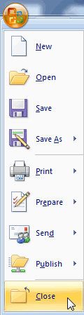

Learn the two most common ways to close a Microsoft Word document.
This feature works the same in all modern versions of Microsoft Word: 2010, 2013, and 2016.
1.Click the gray "X" in the upper-right-hand corner.
2.Select Close from the File menu.
To close a document in Microsoft Word 2007, click the Microsoft Office button and select Close.

When you close your document, you will be prompted to save if you have made any changes since the last time you saved.